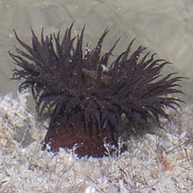
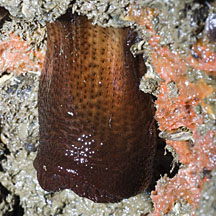
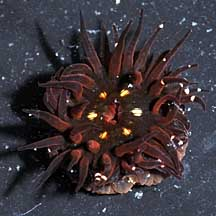
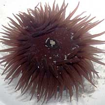
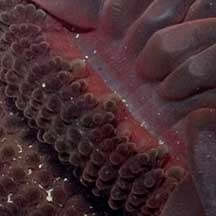
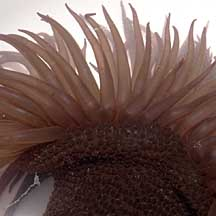

|
|
| sea anemones text index | photo index |
| Phylum Cnidaria > Class Anthozoa > Subclass Zoantharia/Hexacorallia > Order Actiniaria |
| Burgundy
anemone Bunodosoma goanense Family Actiniidae updated Jul 2924 Where seen? This large, fat, dark red anemone has its stronghold at Punggol. Here, many are seen attached to the large smooth boulders below the low water mark. The anemones are usually well spaced apart from one another. We have seen only one pair nestled next to one another. Single specimens have been seen on some other Northern shores. It was previously only known from India and possibly from Bangladesh. Features: Diameter with tentacles expanded 5-8cm. Body, oral disk and tentacles the same dark red, burgundy colour. Sometimes with five pale or yellowish spots or bars around the mouth. Many short tapered tentacles. Body column thick and short and densely covered with regular rows of small non-sticky bumps. The animal attaches with its broad foot to smooth hard surfaces below the low water line. When exposed at low spring tide, it tucks its tentacles into its body column. Status and threats: As at 2024, it is assessed not to be approaching the criteria for being listed among the threatened animals in Singapore. |
 Punggol, Jul 11 |
 Punggol, Jun 12 |
 Pasir Ris, Jul 08 |
|
 Punggol, Jul 11 |
 Punggol, Jul 11 |
 Punggol, Jul 11 |
| Burgundy anemones on Singapore shores |
On wildsingapore
flickr
|
| Other sightings on Singapore shores |
|
burgundy anemones @ punggol 01July2011 from SgBeachBum on Vimeo. |
|
Acknowledgements
References
|